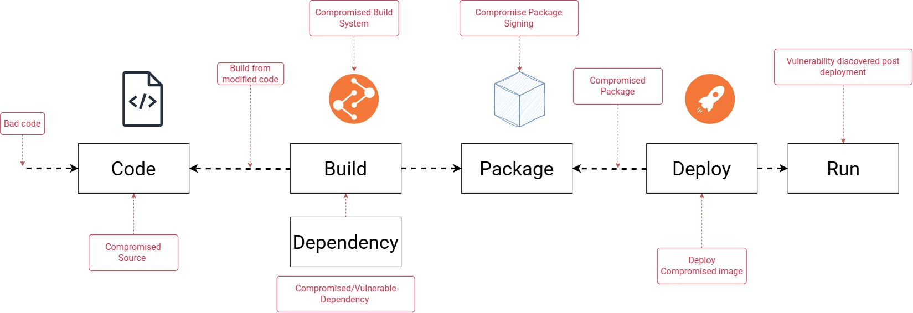
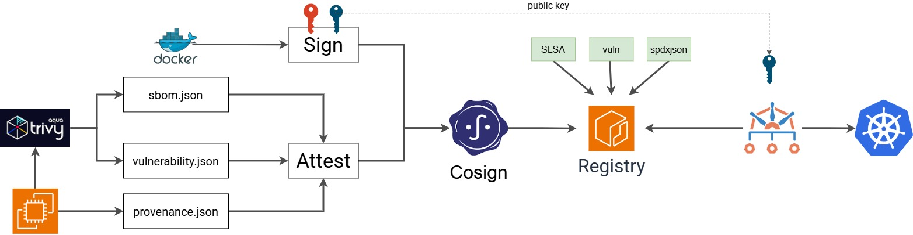

Trusted Registry ≠ Trusted Image
Image signing ensures image authenticity; image attestation provides verifiable evidence about the image’s build and security posture, and together they help prevent untrusted or unsafe container images from being deployed.
We spend significant effort protecting production.
WAF. Firewalls. IAM. Network policies. Admission controls.
But what if the risk enters before the software reaches production?
That is the Software Supply Chain Security problem.
What is image signing and image attestation, what problem they solve
Assistant
In short: image signing proves who approved/published a container image and that it hasn’t been altered, while image attestation provides verifiable metadata about how that image was built, scanned, and validated.
1) What is image signing?
Image signing is the process of applying a cryptographic signature to a container image, usually to its image digest.
What it proves
- The image came from a trusted publisher, CI/CD pipeline, or team.
- The image has not been modified since it was signed.
- A deployment system can verify the image before allowing it to run.
In simple terms
It is like putting a tamper-evident, identity-linked seal on the image.
In my diagram
- The image is built and pushed.
- Cosign signs the image digest using a private key.
- At deploy time, Kyverno verifies the signature using the public key.
- If validation fails, the pod is blocked.
2) What is image attestation?
Image attestation is a signed statement attached to an image that describes facts about it.
Examples of what an attestation may contain
- Build provenance: who built it, when, from what source
- SBOM: software bill of materials
- Vulnerability scan results
- Compliance or policy information
- SLSA provenance details
Notes: Provenance: Build origin/history metadata for an artifact Predicate: The structured payload inside an attestation
predicate.json: A filename, usually holding the predicate payload provenance.json: A filename, usually holding provenance data; may be full statement or predicate only -->
What it proves
Not just that the image is trusted, but also why it should be trusted.
In simple terms
If signing says, “this image is authentic,” attestation says, “here is the evidence about how it was produced and checked.”
In my diagram
- Trivy generates scan results / SBOM.
- A predicate.json or similar metadata is created.
- Cosign signs this metadata as an attestation.
- A policy engine can later validate these attestations before deployment.
3) What problem do image signing and image attestation solve?
They solve software supply chain trust problems.
Without signing/attestation
A cluster may pull and run: - A tampered image - An image from an untrusted registry or developer - An outdated or vulnerable image - An image built outside the approved CI pipeline - An image with unknown contents
With signing
You can enforce: - “Only run images signed by our CI/CD system” - “Reject unsigned images” - “Reject images signed by unknown keys”
With attestation
You can enforce: - “Only run images that have passed vulnerability scanning” - “Only run images with an SBOM” - “Only run images built from approved source repositories” - “Only run images meeting SLSA or compliance requirements”
4) Difference between signing and attestation
| Concept | Main purpose | Verifies |
|---|---|---|
| Image signing | Authenticity and integrity | Who signed the image and whether it was altered |
| Image attestation | Trust evidence and metadata | How the image was built, scanned, and validated |
A good way to remember it:
- Signing = “Is this the right image?”
- Attestation = “Can I trust how this image was created?”
5) How this fits the image you shared
My diagram shows a common Kubernetes admission-control flow:
- Build the Docker image
- Scan it with Trivy and generate SBOM / vulnerability data
- Push the image to ECR
- Generate attestation metadata such as SLSA / predicate files
- Sign the image and attestations using Cosign
- Deploy to Kubernetes, where Kyverno verifies the signature/attestation before admitting the pod
Result
- Validation success → pod admitted
- Validation failed → pod blocked
This prevents untrusted or non-compliant images from running in the cluster.
6) Why organizations use them
Main benefits: - Stronger supply-chain security - Prevention of unauthorized deployments - Better auditability and compliance - Reduced risk of running vulnerable or tampered images - Policy-based admission control in Kubernetes
7) One-line takeaway
Image signing ensures image authenticity; image attestation provides verifiable evidence about the image’s build and security posture, and together they help prevent untrusted or unsafe container images from being deployed.

mkdir my-service
cd
touch main.go
#===
package main
import (
"fmt"
"net/http"
)
func main() {
http.HandleFunc("/", func(w http.ResponseWriter, r *http.Request) {
fmt.Fprint(w, "Hello, World!")
})
fmt.Println("Server starting on port 8080...")
http.ListenAndServe(":8080", nil)
}
#===
go mod init hello-world
#====
slsa-provenance.sh
#=================
#!/usr/bin/env bash
set -euo pipefail
BUILD_TAG=1.2.3
IMAGE="ttl.sh/naren18082026-app:${BUILD_TAG}"
GIT_URL="https://github.com/naren4b/kitto.git"
GIT_BRANCH="main"
GIT_COMMIT=38ad7f558cbfd50c7326ca809e9e99dc8924421b
CI_SYSTEM_ID="killer-sh-$(hostname)"
BUILD_ID="12345"
BUILD_START_TIME=$(date)
docker build -t "$IMAGE" .
DIGEST=$(docker push "$IMAGE" | grep digest: | cut -f3 -d " ")
BUILD_END_TIME=$(date)
cat > provenance.json <<EOF
{
"_type": "https://in-toto.io/Statement/v1",
"subject": [
{
"name": "registry.example.com/myapp",
"digest": {
"sha256": "${DIGEST#sha256:}"
}
}
],
"predicateType": "https://slsa.dev/provenance/v1",
"predicate": {
"buildDefinition": {
"buildType": "https://example.com/docker-build",
"externalParameters": {
"repository": "${GIT_URL}",
"ref": "${GIT_BRANCH}"
},
"resolvedDependencies": [
{
"uri": "git+${GIT_URL}@${GIT_COMMIT}",
"digest": {
"sha1": "${GIT_COMMIT}"
}
}
]
},
"runDetails": {
"builder": {
"id": "${CI_SYSTEM_ID}"
},
"metadata": {
"invocationId": "${BUILD_ID}",
"startedOn": "${BUILD_START_TIME}",
"finishedOn": "${BUILD_END_TIME}"
}
}
}
}
EOF
#=====
#Example:
# DIGEST="sha256:5ff448fd74c98c7f3109f7b34f364ecb368b9c96018a6f1d6858e73b7a2a8f85"
# IMAGE_DIGEST="ttl.sh/naren18082026-app@$DIGEST"
# Install Trivy
curl -sfL https://raw.githubusercontent.com/aquasecurity/trivy/main/contrib/install.sh | sudo sh -s -- -b /usr/local/bin v0.74.0
trivy image --format spdx-json --output sbom-spdx.json $IMAGE_DIGEST
trivy image --format json --output vulnerabilities.json $IMAGE_DIGEST
# Install Cosign
curl -O -L "https://github.com/sigstore/cosign/releases/latest/download/cosign-linux-amd64"
sudo mv cosign-linux-amd64 /usr/local/bin/cosign
sudo chmod +x /usr/local/bin/cosign
# Generate the custom keys
cosign generate-key-pair
# Sign the Image
cosign sign --key cosign.key $IMAGE_DIGEST
# Attest all 3
# 1 sbom (Software Bill of Materials): Lists all software components, libraries, and dependencies included in the artifact (typically in SPDX or CycloneDX formats).
cosign attest --key cosign.key --predicate sbom-spdx.json --type spdxjson $IMAGE_DIGEST
# 2 vuln (Vulnerability Scan): Records security vulnerabilities found in the image. It captures the scanner used, the scan date, and a list of detected CVEs to ensure unpatched images are not deployed.
cosign attest --key cosign.key --predicate vulnerabilities.json --type vuln $IMAGE_DIGEST
# 3 slsa (SLSA Provenance): Tracks how an artifact was built. It includes the source code repository, build platform, dependencies, and build commands to prevent tampering during the CI/CD process.
cosign attest --key cosign.key --predicate provenance.json --type slsa $IMAGE_DIGEST
# custom (Custom Attestations): Allows you to define your own JSON schema for internal compliance, such as manual QA approvals, license checks, or policy clearance.
# cosign attest --key cosign.key --predicate etc.json --type custom $IMAGE_DIGEST
cosign verify
#Example
IMAGE_DIGEST="ttl.sh/naren18082026-app@sha256:5ff448fd74c98c7f3109f7b34f364ecb368b9c96018a6f1d6858e73b7a2a8f85"
cosign verify --key cosign.pub ttl.sh/naren18082026-app@sha256:5ff448fd74c98c7f3109f7b34f364ecb368b9c96018a6f1d6858e73b7a2a8f85
cosign verify-attestation --key cosign.pub ttl.sh/naren18082026-app@sha256:5ff448fd74c98c7f3109f7b34f364ecb368b9c96018a6f1d6858e73b7a2a8f85
cosign verify-attestation --key cosign.pub --type slsa "$IMAGE_DIGEST" | jq -r '.payload' | base64 -d | jq
cosign verify-attestation --key cosign.pub --type spdxjson "$IMAGE_DIGEST" | jq -r '.payload' | base64 -d | jq
cosign verify-attestation --key cosign.pub --type vuln "$IMAGE_DIGEST" | jq -r '.payload' | base64 -d | jq